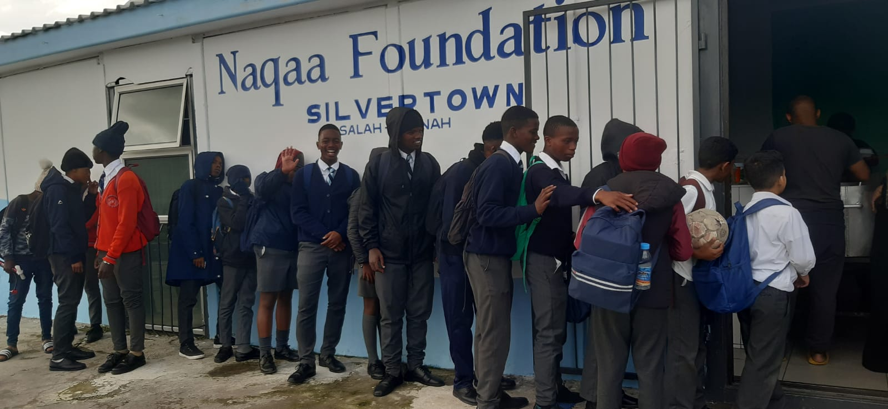

Welcome to Naqaa Foundation
Naqaa Foundation is a community-based non-profit organization established in 2018, dedicated to uplifting lives and strengthening communities through meaningful and sustainable initiatives. Our work spans feeding and welfare support, Islamic education, da’wah, and the establishment of daily and Jumu‘ah salah services, directly impacting hundreds of individuals and families each year. Through consistent service, trusted programs, and community-led efforts, we have become a vital support hub for those in need—providing meals, education, spiritual guidance, and safe spaces for worship and learning. Guided by compassion, accountability, and service excellence, Naqaa Foundation remains committed to building a stronger, more caring, and united community for generations to come.
Who We Are
Based in Cape Town, we work closely with local communities, mosques, and volunteers to provide consistent support to families in need.
What We Do
- Food distribution and meal support programs
- Educational assistance for learners
- Community outreach and welfare projects
- Volunteer and donation coordination
Get Involved
Your support helps us continue our mission. Volunteer your time, donate resources, or partner with us to make a lasting impact.
Our Impact in the Community
This image represents our ongoing outreach work and the support we provide to families and schoolers in need.
